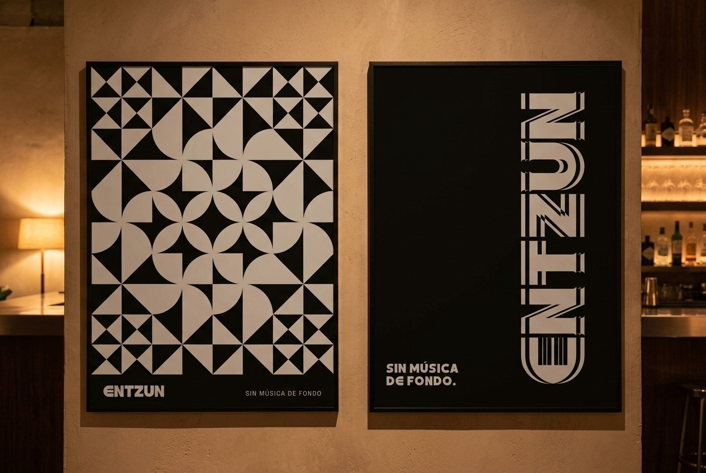
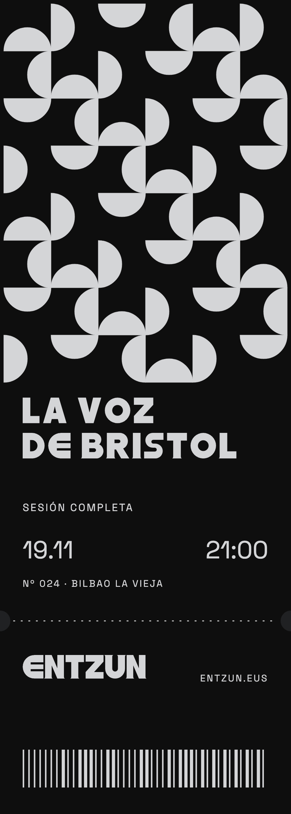
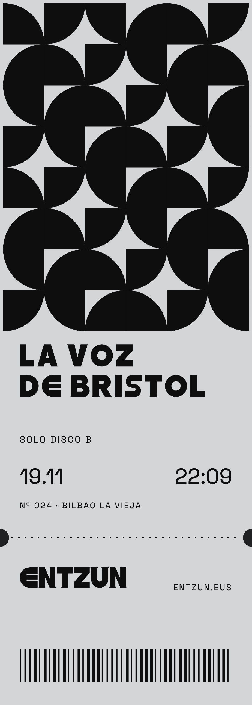
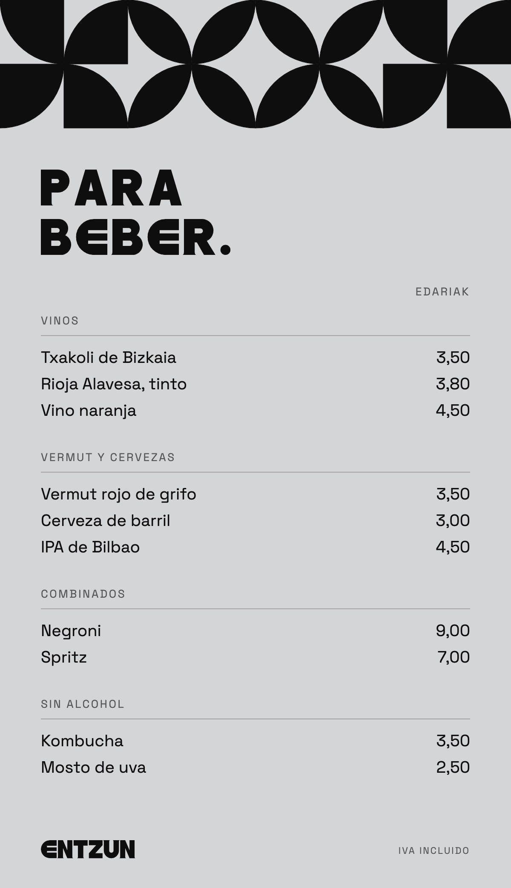
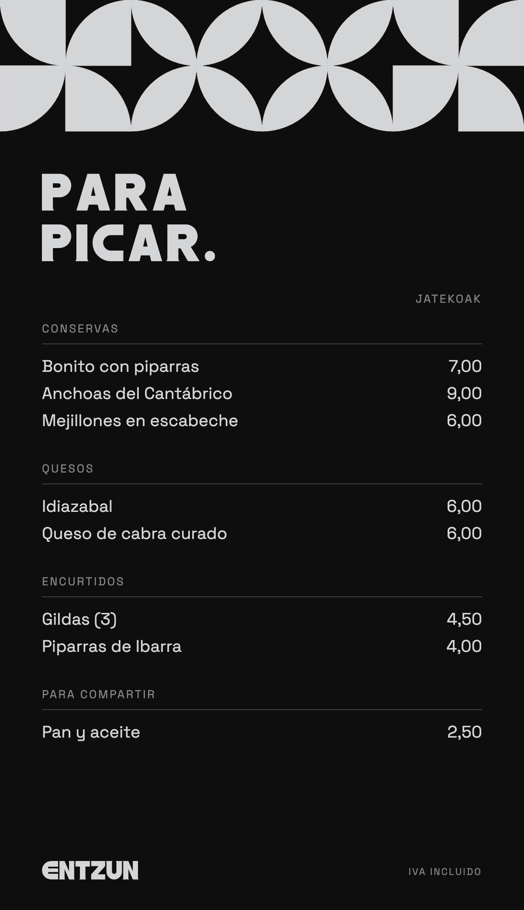
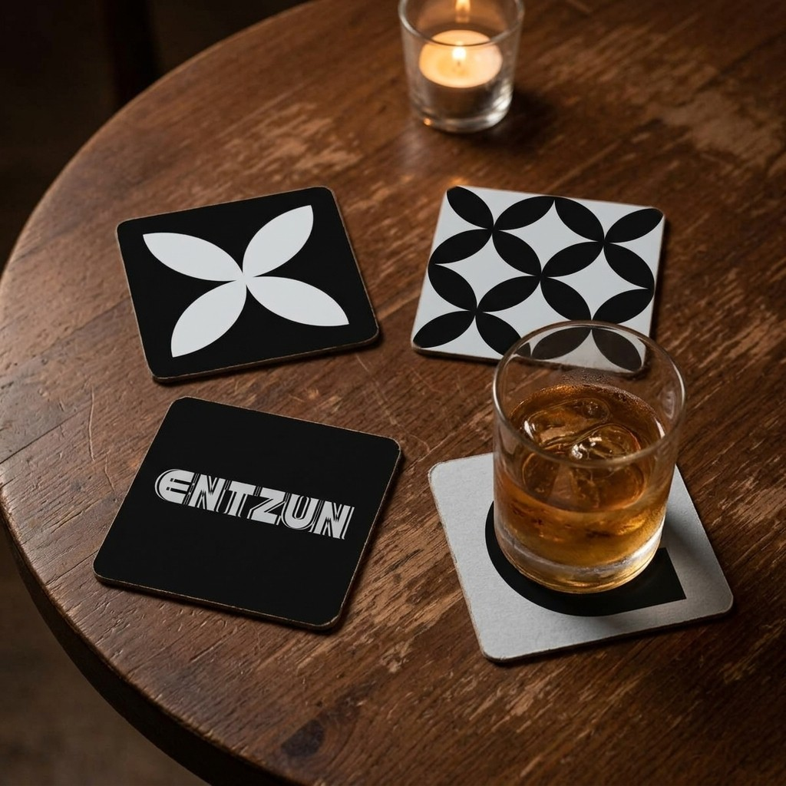

ProyectosENTZUN
Identidad visual
ENTZUN
ENTZUN significa «escuchar» en euskera. Es un bar de escucha en Bilbao La Vieja donde cada noche suenan dos discos enteros, con un descanso en medio. Sin música de fondo.
Contexto y objetivos
Contexto
En casi todos los bares la música acompaña. Aquí es el plan: luz baja, móviles guardados y dos álbumes elegidos para escucharse juntos, de principio a fin.
Baja la luz. Empieza el disco.
Objetivos
Explicar de forma sencilla un formato poco conocido.
Crear un sistema que funcione con cualquier disco.
Un guiño vasco muy sutil, sin caer en el tópico.
Mi papel
- Dirección de arte
- Identidad visual
- Diseño y desarrollo web
Concepto, estrategia e identidad completa: logotipo, sistema de glifos, web con reservas, redes, newsletter, vídeo de marca y piezas impresas.
Galería
Del disco al glifo
- Sesión
- Canciones
- Forma
- Giro
Construcción
- Alto 100
- Radio de la E 50
- Cortes 9
- Paso 7
- Pie en cuña 5 × 9
Negro
#0E0E0EGris claro
#D4D5D6Letra propia

Proceso creativo
El logotipo es una letra maciza con un guiño casi invisible a las estelas vascas: los pies de las letras se abren en una pequeña cuña.
Cada disco genera su propio glifo a partir de sus datos, con una retícula de cuatro celdas y unas pocas formas. Así el sistema crece con cada sesión sin empezar de cero.
La noche tiene dos partes y la marca también: negro y gris claro, un disco y otro, y un cambio en el que las piezas de uno se transforman en el siguiente.





Resultado final
Una identidad en negro y gris claro que nace de una idea sencilla: dos discos, una noche. El sistema se aplica a una web con reservas, redes, newsletter, vídeo de marca y piezas impresas, y cada nueva sesión genera sus propias formas.